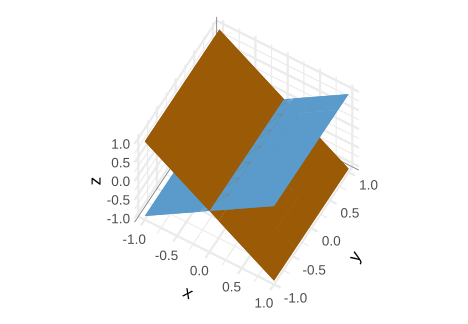
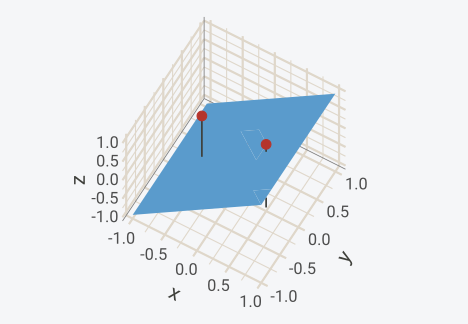
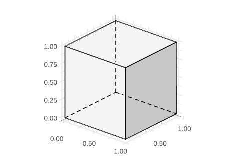

Visibility determines which parts of three-dimensional geometry can be seen from a camera. This article explains overlapping surfaces, drawing order and finite-width strokes. Installation is covered in Get started. Lighting and styling surfaces shows how to configure surface outlines and hidden lines.
Overlapping geometry
Occlusion occurs when nearer geometry covers farther geometry in the projected image. A panel scene combines geometry from its three-dimensional layers before resolving visibility. An intersection can make different parts of a surface lie in front of and behind another surface.
a <- expand.grid(x = seq(-1, 1, length.out = 8),
y = seq(-1, 1, length.out = 8))
a$z <- a$x
b <- a
b$z <- -b$x
ggplot(a, aes(x, y, z = z)) +
geom_surface_3d(fill = "#2E6F9E") +
geom_surface_3d(data = b, fill = "#9E5E0F") + coord_3d(elevation = 60)
Camera projection places the scene’s faces, strokes, point marks and text on the page and assigns their depth along the viewing direction. Visibility refers to this represented geometry, including the triangles used to approximate a curved surface.
The occlusion graph
An occlusion graph records drawing dependencies. Each node represents a piece of geometry. A directed edge says that one piece must be drawn before another where their projected areas overlap. Following these dependencies produces an order from the back of the scene towards the camera.
Some configurations create a cycle: A covers part of B, B covers part of C, and C covers part of A. Intersections can also require a change of drawing order within a face. Splitting the affected geometry supplies smaller pieces that can be ordered. Geometry whose overlap relationships already admit an order can stay intact.
The vector renderer uses this ordering and localized splitting to draw the scene. This belongs to the family of visibility methods discussed by Snyder and Lengyel 1998. Their paper studies visibility ordering and compositing for image layers. It provides background for thinking about occlusion dependencies.
Splitting geometry
Splitting inserts vertices where geometry crosses a dividing plane. The resulting pieces preserve the represented surface. The classical hidden-surface method of Newell, Newell and Sancha 1972 and the spatial partitioning method of Fuchs, Kedem and Naylor 1980 establish related approaches to obtaining a visible drawing order.
Localized splitting limits the extra geometry to relationships that need it, though a dense collection of interpenetrating shapes may still require many pieces. Choose the raster backend in Choosing rendering and image formats when the intended output is a fixed-size image of dense geometry.
Strokes and marks
A stroke covers an area determined by its width, joins and end caps. Its visible area can extend on either side of the path coordinates. Nehab 2020 explains how stroked paths define filled regions and why joins and caps matter.
Point marks also have a footprint on the page. Visibility near the boundary of a surface therefore depends on the mark’s size. Physical output dimensions affect these footprints, so inspect the plot at its intended size.
points <- data.frame(x = c(-0.5, 0, 0.5), y = c(0, 0.5, 0),
z = c(0.6, -0.4, 0.7))
ggplot(a, aes(x, y, z = z)) + geom_surface_3d(fill = "#2E6F9E") +
geom_segment_3d(data = points, aes(xend = x, yend = y, zend = -1),
linewidth = 0.8) +
geom_point_3d(data = points, size = 4, colour = "#B5342B") +
coord_3d(elevation = 60)
Feature lines and haloes
A surface or mesh layer can derive its own lines with
outline = outline_3d(): silhouettes, where the surface
turns away from the camera, creases, where neighbouring faces meet at a
sharp angle, and boundaries of open surfaces. Silhouettes depend on the
camera, so they are recomputed for each panel. Bénard and Hertzmann 2019 describe these lines
and how to extract them from a mesh.
The lines are strokes of the scene, so nearer surfaces hide them like
any other stroke, and hidden = "dashed" draws their hidden
parts dashed. Where a hidden line passes behind a visible one, the two
strokes touch on the page and the depth order is hard to read.
halo leaves a gap of the given width on each side of every
line where a farther line passes behind it, the haloed lines of Appel,
Rohlf and Stein (1979). Lines that end at a common vertex, such as the
edges at a corner of a cube, still meet.
cube <- expand.grid(x = 0:1, y = 0:1, z = 0:1)
quads <- rbind(c(1, 3, 4, 2), c(5, 6, 8, 7), c(1, 2, 6, 5),
c(3, 7, 8, 4), c(1, 5, 7, 3), c(2, 4, 8, 6))
ggplot() +
geom_mesh_3d(vertices = cube, faces = quads, fill = "grey95",
outline = outline_3d(hidden = "dashed", linewidth = 0.8,
halo = grid::unit(1.2, "mm"))) +
coord_3d(azimuth = -50, elevation = 25)
Transparency and overlays
An opacity below one lets farther geometry contribute to the image. The order of contributions affects the resulting colour. Exact geometric ordering describes the represented shapes; finite raster sampling and device antialiasing also affect boundary pixels.
The layer adapter accepts occlusion = "overlay" for
geometry intended to be drawn above the depth-tested scene. Use that
setting for annotations whose role requires them to remain visible.
References
Snyder, J. and Lengyel, J. (1998). Visibility Sorting and Compositing Without Splitting for Image Layer Decompositions. SIGGRAPH, 219-230. doi:10.1145/280814.280878.
Newell, M. E., Newell, R. G. and Sancha, T. L. (1972). A Solution to the Hidden Surface Problem. ACM Annual Conference, 443-450. doi:10.1145/800193.569954.
Fuchs, H., Kedem, Z. M. and Naylor, B. F. (1980). On Visible Surface Generation by A Priori Tree Structures. SIGGRAPH, 124-133. doi:10.1145/800250.807481.
Bénard, P. and Hertzmann, A. (2019). Line Drawings from 3D Models: A Tutorial. Foundations and Trends in Computer Graphics and Vision 11, 1-159. doi:10.1561/0600000075.
Appel, A., Rohlf, F. J. and Stein, A. J. (1979). The Haloed Line Effect for Hidden Line Elimination. SIGGRAPH ’79. history.siggraph.org.
Nehab, D. (2020). Converting Stroked Primitives to Filled Primitives. ACM Transactions on Graphics 39(4). doi:10.1145/3386569.3392392.